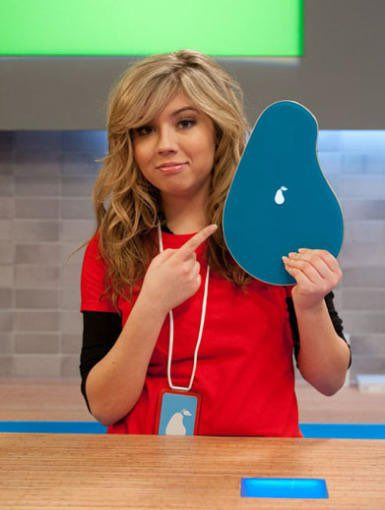

Bienvenido a PERAPOD
Principal |
Fotos
|
Contacto
|
Precios

Pagina Principal‹/h1>
Entretenimiento a todas partes
Compra ahora
Este es mi segunda pagina
PERA
POD
PERA POD
Este es el texto de mi primer articulo
Este es el texto de mi segundo articulo